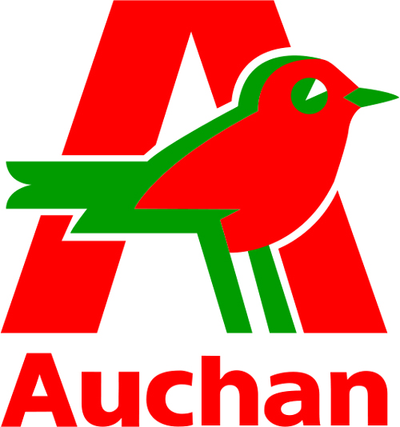
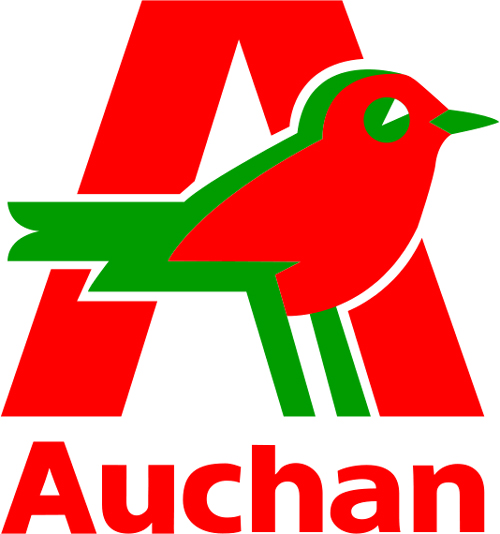

WEB 2
L2INFO
Who am I ?
Michiel Missotten
- Freelance
- Working as web developer
- Since 2009
Technologies
- Web : Html / CSS
- PHP
- Java / Scala
- Adobe Flex
 


What are we going to talk about ?
Web development
How are we going to do that ?
- 48 hours
- by 3 hour split
- lots of coding !
- Written test
- A few homework exercices
- A big project !
Once upon a time...
there were computers
When suddenly...
a cold war appears !
- NASA: National Aeronautics and Space Agency
- DARPA : Department of Defense’s Advanced Research Projects Agency
ARPANET
- 1962 : Idea of a network point 2 point
- 1965 : First implementation of communication
- 1969 : First message delivered
- late 1970 : TCP and IP protocol
- 1980s : Tim Berners Lee creates WWW
- 1990 : First browser
Inter - net
What is a network ?
A group of entities communicating with each other
Topology
- Point 2 point
- Bus
- Star
- Ring
- Mesh
- Tree
- Hybrid